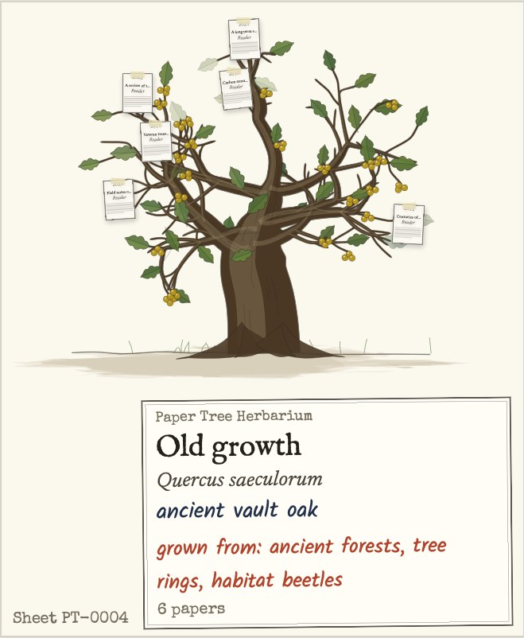

A flask in your notch that explains hard papers.
Highlight a line you don't follow and Paper Tree explains it in plain words, on a small card beside the text. Add the papers you read and each one becomes a branch on a tree.
Paper Tree isn't signed by Apple yet, so the first time, right-click it in Applications, choose Open, then Open again.

How you use it
- No. 1
Tap the right Option key once. The island grows out of the notch with your trees, and anything you highlighted is ready to add as a paper.
- No. 2
Tap it twice for Research mode. While it is on, highlight a line in Preview, Chrome or Word and a card explains it. Ask again for Simpler or More detail.
Paper TreeNo. 0007Brain myeloid cells, including infiltrating monocyte-derived macrophages (MDMs) and microglia…
These are special immune cells in the brain that help clean up damage and manage swelling when someone has a stroke or loses blood flow.
- myeloid cells
- a type of immune cell
- microglia
- immune cells that live in the brain
- ischemic
- caused by a lack of blood flow
- No. 3
Keep a pencil branch. Each tree suggests papers from Semantic Scholar in pencil. Keep one and it turns to ink.
- No. 4
One permission. macOS asks you to allow Paper Tree under Accessibility so it can read the words you highlight. It only reads them while Research mode is on, and never sees what you type. Highlights go to Paper Tree's explainer, which asks Google's Gemini for a short answer.